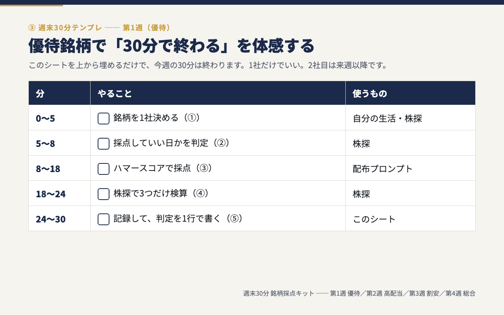
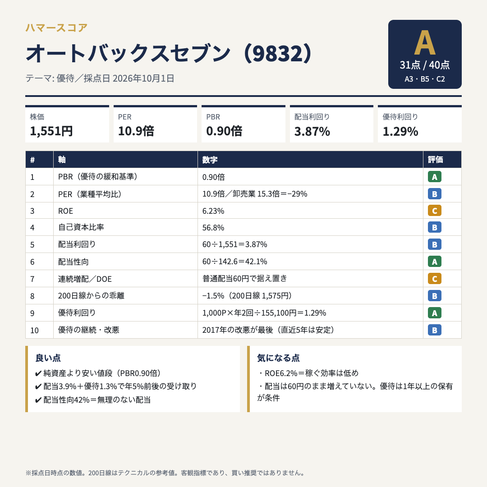

実績
「おすすめ銘柄」を探す時間が、自分で候補を絞る時間に変わる


週末30分 銘柄採点キット
開発版5銘柄すべてで作者の判断と一致した10軸採点を、あなたの週末に。
週末30分×4回。平日は何もしなくてOK。
プロンプトをコピペするだけで、忙しい会社員でも日本株を「候補／保留／見送り」に整理できる6つの実践ツール＆教材です。
足りないのは銘柄情報ではなく、自分で判断するための物差しです。
このキットは、AIに「下調べ」を任せ、最後はあなたが判断するための道具です。
実績
商品内容
4週間、週末30分ずつ実際の銘柄を採点しながら、「何を、どんな順番で確かめるのか」を身につけます。

気になる日本株を入力すると、10個の物差しに沿ってAIが下調べ。S〜Dの総合評価と、候補／保留／見送りを考える材料を、情報源のリンク付きで整理します。

実際の銘柄の採点結果をスライドで映しながら、「なぜこの点数なのか」「どこを確かめればいいのか」を解説します。

第1週 優待 → 第2週 高配当 → 第3週 割安 → 第4週 総合。毎週やることが決まっているので、「今週は何をするんだっけ」がなくなります。

S〜Dまで、実際に採点した出力サンプルを20枚。自分の採点結果と見比べる「答え合わせ」に使えます。

4週間のあとも同じ品質で回すための1枚。「評価が高ければ何でも候補にする」判断にならないための確認項目です。
プログラム中から翌月末まで、使い方の質問を受け付けます。個別の売買判断にはお答えしません。
価格
投資スクールや個別指導の中には、10万円、30万円、それ以上するものもあります。平日は仕事や家事、子育てで忙しい会社員の方にこそ使ってほしいので、
このキットは、将来の利益や値上がりを保証するものではありません。AIは下調べを補助する道具で、出力には誤りが含まれることがあります。重要な情報は会社のIR資料などの原典でご自身でも確かめ、最終的な投資判断はご自身で行ってください。
返金についてはBrainの規定に準じます。
僕は専業投資家でも証券会社出身でもありません。平日はメーカーの研究開発職として働く、ごく普通の会社員です。
週末30分なら続けられる。AIに下調べを任せても、最後の判断まではAIに任せない。そのために作ったのが、この「週末30分 銘柄採点キット」です。
詳しい中身・よくある質問・購入は、販売ページ（Brain）でご覧ください。
ハマー